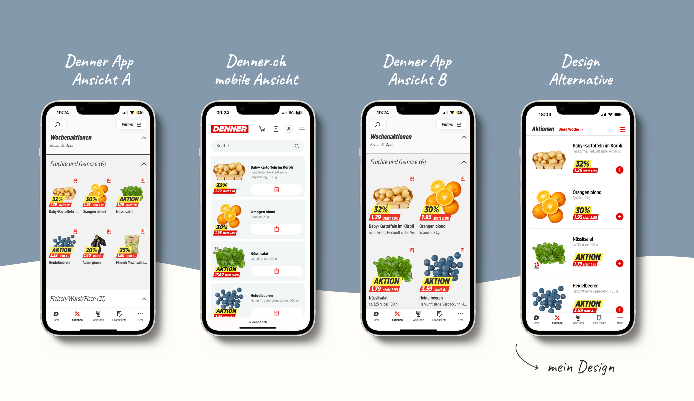
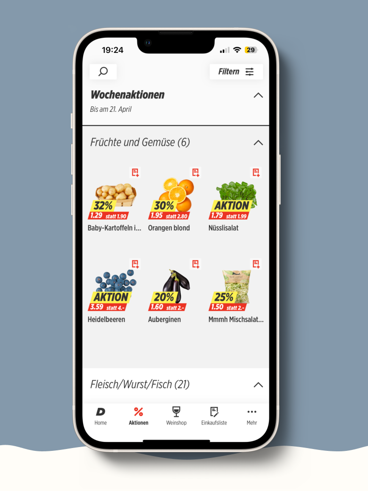
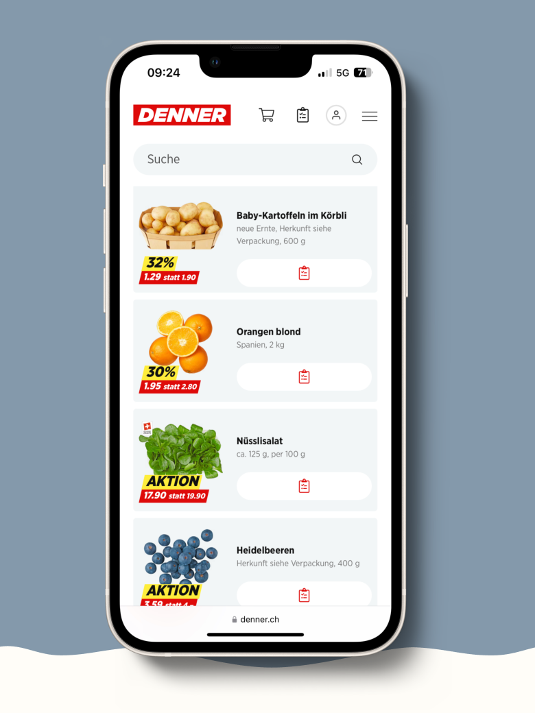
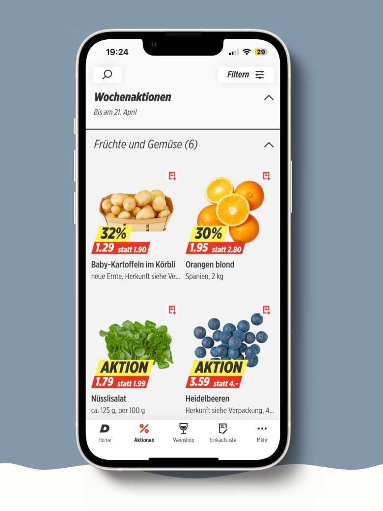
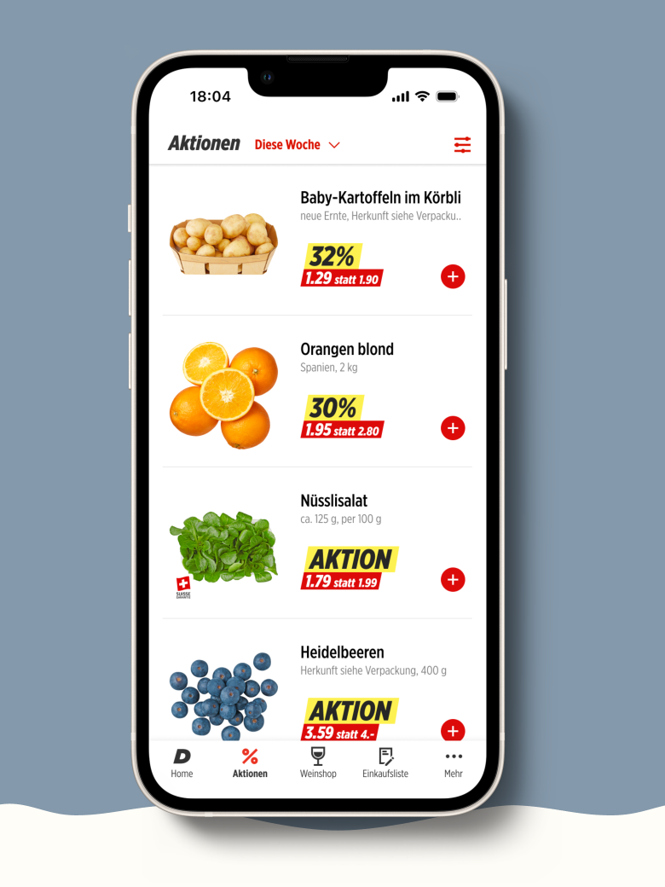
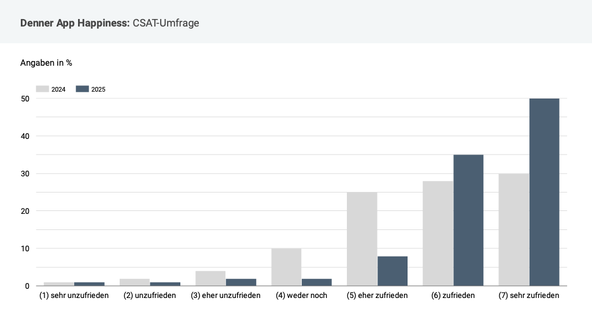

Executive Summary
Through a hypothesis-driven UX redesign, I significantly improved the perceived clarity of the Denner app:
- 28% Anstieg des CSAT-Scores von 58% auf 86%
My role:
- Project lead
- User research lead
- Requirements engineering
My tasks:
- Quantitative UX research and statistical analysis
- UX design — high fidelity
- Project lead and handoff to design and development team
- Writing backlog items in Azure DevOps and running acceptance tests
- Post-launch documentation
Methods used:
Survey
High-Fidelity Design
ANOVA
Pairwise t-tests with Bonferroni correction
Usability-Testing
DISCOVER
Context and problem definition
Lack of clarity hurts user satisfaction.
-
CSAT survey (n = 2'575)
→ 58% CSAT-Score (kritisch tief)
→ 30% name lack of clarity as the main problem
EXPLORE & TEST
Research question
Together with the product development team, I defined and prioritized research questions and formulated hypotheses for the research approach.
Research Question:
How can clarity in the Denner app be improved — and will users actually perceive an alternative design as clearer?
EXPLORE & TEST
Methodological approach
I developed a new high-fidelity design in Figma, optimized for:
- visual hierarchy,
- information density
- and navigation clarity
Quantitative design comparison (validation)
I tested four different designs with a rating survey among roughly 2,000 active users and analyzed the data using ANOVA and pairwise t-tests.
Designs tested and results


Denner app view A

Denner.ch mobile view

Denner app view B

My design alternative
Denner app view A
3er Grid
3.3
1.4
Denner.ch mobile view
Landscape
3.5
1.4
Denner app view B
2er Grid
3.7
1.1
Design alternative
Landscape
4.1
1.0
Denner app view A
Design3er Grid
Mean3.3
Variance1.4
Denner.ch mobile view
DesignLandscape
Mean3.5
Variance1.4
Denner app view B
Design2er Grid
Mean3.7
Variance1.1
Design alternative
DesignLandscape
Mean4.1
Variance1.0
ANOVA: significant differences between designs
- F-Wert 162.1 > Fcrit 2.606
Pairwise t-tests (with Bonferroni correction):
The alternative design is significantly better than all comparison designs.
Decision and implementation
Based on the clear results, the product team decided on:
- Implementing the new design
- Moving into product development
Measurable product success
After go-live, another CSAT survey was conducted:
- Before redesign: 58%
- After redesign: 86% → +28% increase
- Confirmation that better clarity directly improves user satisfaction.
- Example of a data-informed UX decision with measurable business value
